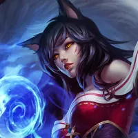
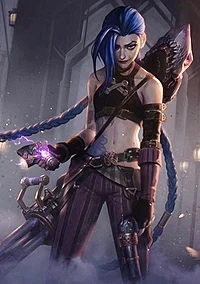
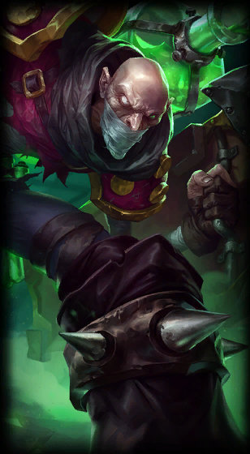

Champions

Ahri
The Nine-Tailed Fox
Innately connected to the latent power of Runeterra, Ahri is a vastaya who can reshape magic into orbs of raw energy. She revels in toying with her prey by manipulating their emotions before devouring their life essence. Despite her predatory nature, Ahri retains a sense of empathy as she receives flashes of memory from each soul she consumes.

Jinx
The Loose Cannon
A manic and impulsive criminal from Zaun, Jinx lives to wreak havoc without care for the consequences. With an arsenal of deadly weapons, she unleashes the loudest blasts and brightest explosions to leave a trail of mayhem and panic in her wake. Jinx despises boredom, and gleefully brings her own chaotic brand of pandemonium wherever she goes.
Fiddlesticks
The Ancient Fear
Something has awoken in Runeterra. Something ancient. Something terrible. The ageless horror known as Fiddlesticks stalks the edges of mortal society, drawn to areas thick with paranoia where it feeds upon terrorized victims. Wielding a jagged scythe, the haggard, makeshift creature reaps fear itself, shattering the minds of those unlucky enough to survive in its wake. Beware the sounding of the crow, or the whispering of the shape that appears almost human… Fiddlesticks has returned.
Garen
The Might of Demacia
A proud and noble warrior, Garen fights as one of the Dauntless Vanguard. He is popular among his fellows, and respected well enough by his enemies—not least as a scion of the prestigious Crownguard family, entrusted with defending Demacia and its ideals. Clad in magic-resistant armor and bearing a mighty broadsword, Garen stands ready to confront mages and sorcerers on the field of battle, in a veritable whirlwind of righteous steel.

Singed
The Mad Chemist
Singed is a Zaunite alchemist of unmatched intellect, who has devoted his life to pushing the boundaries of knowledge—with no price, even his own sanity, too high to pay. Is there a method to his madness? His concoctions rarely fail, but it appears to many that Singed has lost all sense of humanity, leaving a toxic trail of misery and terror in his wake.
Yuumi
The Magical Cat
A magical cat from Bandle City, Yuumi was once the familiar of a yordle enchantress, Norra. When her master mysteriously disappeared, Yuumi became the Keeper of Norra's sentient Book of Thresholds, traveling through portals in its pages to search for her. Yearning for affection, Yuumi seeks friendly companions to partner with on her journey, protecting them with luminous shields and fierce resolve. While Book strives to keep her on task, Yuumi is often drawn to worldly comforts, such as naps and fish. In the end, however, she always returns to her quest to find her friend.